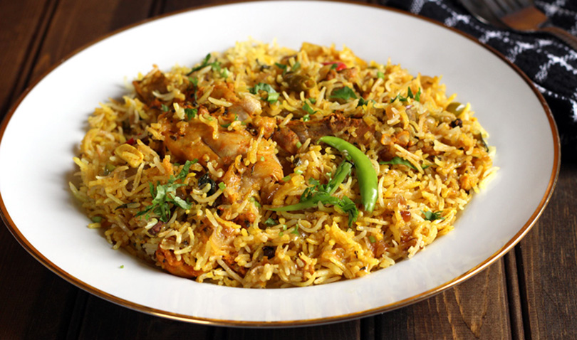

Chicken Biryani
Submitted by Iqrah Tauhid
Chicken biryani is a chicken and rice styled dish, which is widely popular in India and
Pakistan. Because of its lengthy preparation
time, most people choose to pay for the dish itself rather than making it at home. Due to
the amount of time it takes to make the dish,
it tends to be reserved for special occasions like weddings, parties, or holidays. The dish
itself tends to be very heavy, so it is usually
only eaten for dinner. While the dish is not vegetarian, it can be adapted to make it one.
Ingredients
- 4 tablespoons vegetable oil
- 4 small potatoes, peeled and halved
- 2 large onions, finely chopped
- 2 cloves garlic, minced
- 1 tablespoon minced fresh ginger root
- 1/2 teaspoon chili powder
- 1/2 teaspoon ground black pepper
- 1/2 teaspoon ground turmeric
- 1 teaspoon ground cumin
- 1 teaspoon salt
- 2 medium tomatoes, peeled and chopped
- 2 tablespoons plain yogurt
- 2 tablespoons chopped fresh mint leaves
- 1/2 teaspoon ground cardamom
- 1 (2 inch) piece cinnamon stick
- 1 (1 inch) piece cinnamon stick
- 3 pounds boneless skinless chicken pieces, cut into chunks
- 2 1/2 teaspoons vegetable oil
- 1 large onion, diced
- 1 pinch powdered saffron
- 5 pods cardamom
- 3 whole cloves
- 1/2 teaspoon ground ginger
- 1 pound basmati rice
- 4 cups chicken stock
- 1 1/2 teaspoons salt
Instruction
- In a large skillet, fry potatoes in 2 tablespoons of the vegetable oil until brown, and put aside.
- Add the remaining oil to the skillet and fry the onion, garlic and ginger until
the onion is soft and golden.
Add tomatoes, chili, pepper, turmeric, cumin, and salt. Fry the mixture for 5 minutes, stirring contantly. - Add yogurt, mint, cardamom, and the 2 inch piece cinnamon stick. Cover and cook over
low heat, stirring occasionally until
the tomatoes are cooked. If the mixture becomes too dry and starts to stick to the pan, add a little hot water. - When the mixture is thick and smooth, add the chicken pieces and stir.
- Cover and cook over low heat until the chicken is tender (30-45 minutes). There should
only be a little thick gravy
left. In necessary, cook uncovered for a few minutes to reduce the gravy. - Wash the rice in hot water a couple of times and drain it in a colander.
- In a lark skillet, heat the 2 1/2 teaspoons of vegetable oil and fry the onions until
they are golden. Add saffron,
cardomom, cloves, cinnamon stick, ginger, and rice. Stir until the rice is coated with spices. - In a medium pot, heat the chicken stock and salt. When the mixture is hot, pour it over the rice and stir well.
- Add the chicken mixture and the potatoes, and gently mix them into the rice. Bring it to a boil.
- Cover the saucepan, turn the heat to low, and steam for 20 minutes. Do not lift the lid or stir.
Spoon the biryani onto a warm
serving dish.